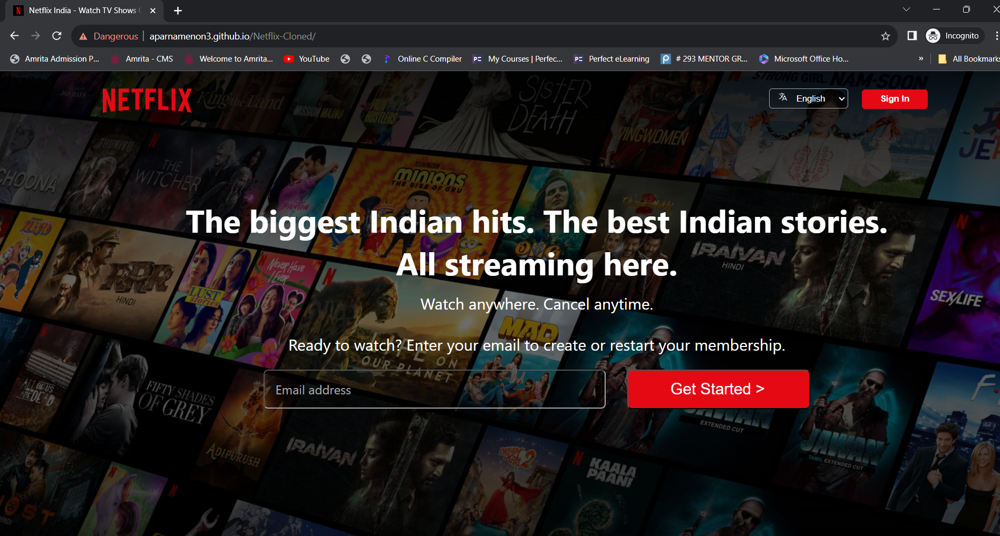
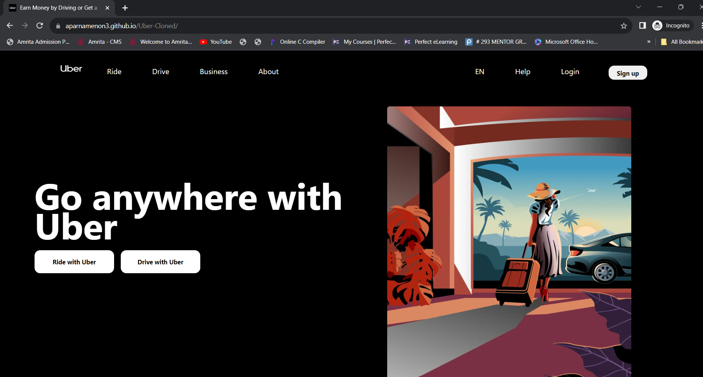
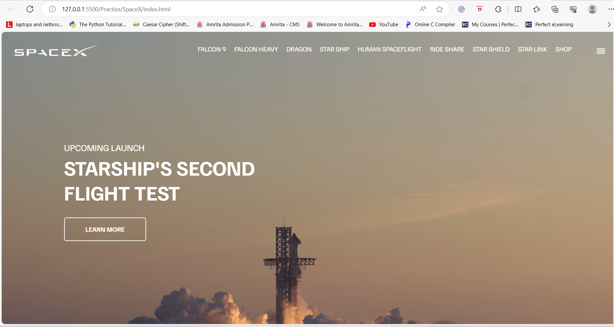

Topic : Exploring the Depths of Innovation: Advancing Image Enhancement in the Underwater Realm through Cutting-Edge CNN and GAN Approaches.
Research Project Overview :
Underwater image-capturing technology has advanced over the years, and varieties of artificial intelligence-based applications have been developed on digital and synthetic images. The low-quality and low-resolution underwater images are challenging factors for use in existing image processing in computer vision applications. Degraded or low-quality photos are common issues in the underwater imaging process due to natural factors like low illumination and scattering. The recent techniques use deep learning architectures like CNN, GAN, or other models for image enhancement. Although adversarial-based architectures provide good perceptual quality, they performed worse in quantitative tests compared with convolutional-based networks. A hybrid technique is proposed in this paper that blends both designs to gain advantages of the CNN and GAN architectures. The generator component produces or makes images, which contributes to the creation of a sizable training set. The EUVP dataset is used for experimentation for model training and testing. The PSNR score was observed to measure the visual quality of the resultant images produced by models. The proposed system was able to provide an improved image with a higher PSNR score and SSIM score with state-of-the-art methods.
Publication Details : Published a paper titled "A Hybrid Approach for Underwater Image Enhancement Using CNN and GAN" in the International Journal of Advanced Computer Science and Applications (IJACSA) in July 2023. You can read the Publication
Topic : Underwater Object Detection using SSD and YOLOv5 based on Image Enhancement with CNN-GAN hybrid approach
Research Project Overview :
For my Underwater Object Detection project, I conducted thorough data preprocessing, image annotation, and augmentation. Employing state-of-the-art SSD and YOLO V5 architectures, the project exhibited notable improvements in mean Average Precision (mAP) and Intersection over Union (IoU) metrics compared to conventional underwater images.
Paper Details : Work On Progress
Topic : Person Re-Identification using Siamese Triplet Network
Research Project Overview :
Developed and applied Siamese Triplet Networks for person Re-identification (Re-ID) tasks, leveraging their ability to learn distinct feature representations even with limited labeled data. Conducted data preprocessing, including resizing and random augmentation for enhanced model robustness. Crafted a Siamese network architecture with identical CNN subnetworks, sharing weights, and implemented a triplet loss function to optimize embeddings for anchor, positive, and negative samples. Trained the model using annotated triplets and utilized the triplet loss for weight updates. Successfully deployed the trained Siamese Triplet Network for person Re-ID applications.
Paper Details : Work On Progress
Topic : Image Classification with Convolutional Neural Networks (CNN)
Project Overview :
Designed and implemented an image classification model employing a Convolutional Neural Network (CNN) architecture. Conducted data preparation and augmentation for both training and validation sets, resulting in an 83% accuracy rate on a dataset comprising 100 classes.
Topic : Streamify: A Netflix-inspired Web Experience
Project Overview :
Streamify is a meticulously crafted web experience, drawing inspiration from Netflix's user-friendly design. This project showcases my skills in web development, featuring a seamless streaming interface and dynamic content presentation. Dive into a user-centric environment with Streamify, a testament to my proficiency in creating engaging and responsive web applications.
Topic : RideXperience: A Seamless Journey Through Web Development
Project Overview :
Developed a user-friendly and responsive Uber-inspired website, ensuring a smooth and efficient web experience for users. Implemented key features such as real-time tracking, ride booking, and payment integration, offering a comprehensive emulation of the Uber platform.
Topic : SpaceX Explorer: A Dynamic Website Emulating the Innovation and Exploration of SpaceX
Project Overview :
"SpaceX Explorer" is a meticulously crafted website that replicates the innovation and exploration ethos of SpaceX. Dive into the world of space exploration, learn about groundbreaking missions, and experience the future of space travel through this engaging and informative platform.
